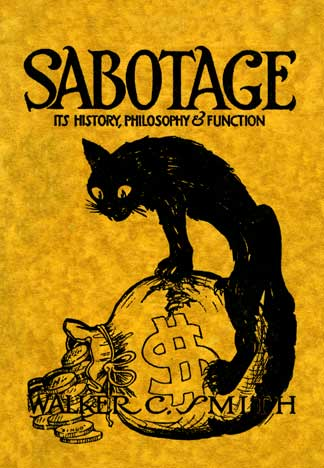

Sabotage: Its History, Philosophy & Function
By Walker C. Smith - 1917 edition; originally published in 1913
FOREWORD
This little work is the essence of all available material collected on the subject of Sabotage for a period of more than two years. Thanks are due to the many rebels who gave assistance, and especially to Albin Braida, who made for me what I think to be the first English translation of Pouget's work on Sabotage. From this last pamphlet extracts have been taken and adaptations made to suit American conditions.
The object of this work is to awaken the producers to a consciousness of their industrial power. It is dedicated, not to those who advocate but to those who use sabotage.
WALKER C. SMITH.
No theory, no philosophy, no line of action is so good as claimed by its advocates nor so bad as painted by its critics. Sabotage is no exception to this rule. Sabotage, according to the capitalists and the political socialists, is synonymous with murder, rapine, arson, theft; is illogical, vile, unethical, reactionary, destructive of society itself. To many anarchist theorists it is the main weapon of industrial warfare, overshadowing mass solidarity, industrial formation and disciplined action. Some even go so far as to claim that sabotage can usher in the new social order. Somewhere between these two extreme views can he found the truth about sabotage.
Three versions are given of the source of the word. The one best known is that a striking French weaver cast his wooden shoe—called a sabot—into the delicate mechanism of the loom upon leaving the mill. The confusion that resulted, acting to the workers' benefit, brought to the front a line of tactics that took the name of SABOTAGE. Slow work is also said to be at the basis of the word, the idea being that wooden shoes are clumsy and so prevent quick action on the part of the workers. The third idea is that Sabotage is coined from the slang term that means "putting the boots" to the employers by striking directly at their profits without leaving the job. The derivation, however, is unimportant. It is the thing itself that causes commotion among employers and politicians alike. What then is Sabotage?
Sabotage is the destruction of profits to gain a definite, revolutionary, economic end. It has many forms. It may mean the damaging of raw materials destined for a scab factory or shop. It may mean the spoiling of a finished product. It may mean the displacement of parts of machinery or the disarrangement of a whole machine where that machine is the one upon which the other machines are dependent for material. It may mean working slow. It may mean poor work. It may mean missending packages, giving overweight to customers, pointing out defects in goods, using the best of materials where the employer desires adulteration, and also the telling of trade secrets. In fact, it has as many variations as there are different lines of work.
Note this important point, however. Sabotage does not seek nor desire to take human life. Neither is it directed against the consumer except where wide publicity has been given to the fact that the sabotaged product is under the ban. A boycotted product is at all times a fit subject for sabotage. The aim is to hit the employer in his vital spot, his heart and soul, in other words, his pocketbook. The consumer is struck only when he interposes himself between the two combatants.
On the other hand, sabotage is simply one of the many weapons in labor's arsenal. It is by no means the greatest one. Solidaric action is mightier than the courageous acts of a few. Industrial class formation gives a strength not to be obtained by mere tactics. Self discipline and cooperative action are necessary if we are to build a new social order as well as destroy the old. Sabotage is merely a means to an end; a means that under certain conditions might be dispensed with and the end still be gained.
Sabotage will sometimes be misused, flagrantly so; the same is true of every one of the weapons of labor. The main concern to revolutionists is whether the use of sabotage destroy the power of the masters in such a manner as to give the workers a greater measure of industrial control. On that point depends its usefulness to the working class.
II.
Sabotage is not a form of action brought forth from French conditions. It dates back to the earliest days of human exploitation. It is born of class struggles—of man's inhumanity to man. From serfdom to wage slavery the enslaved class has instinctively tried to render less to the master than was expected of it. This unconscious sabotage shows the irreconcilable antagonism between capitalist and laborer, master and slave.
Sabotage was not formally baptized as a word to describe a formula of social struggle until the Confederal Congress of Tolosa in 1897. Open advocacy of the idea and conscious sabotage in place of instinctive action began in France about this time. It had been preached in England and Scotland for many years before that, under the name of "Ca' Canny." This phrase of Scotch origin meant "Go slow," or to be more literal, "Don't hurry up." From a publication "The Social Museum" an instance is gained of the use of sabotage by the Scotch.
In 1889 the organized dockers of Glasgow demanded a ten per cent increase of wages but met with the refusal of the employers. Strike breakers were brought in from among the agricultural laborers and the dockers had to acknowledge defeat and return to work on the old wage scale But before the men resumed their work, their secretary of the union delivered to them the following address:
You are going back to work at the old wage. The employers have repeated time and time again that they were delighted with the work of the agricultural laborers who had taken our places for several weeks during the strike. But we have seen them at work; we have seen that they could not even walk a vessel, that they dropped half of the merchandise they carried, in short, that two of them could hardly do the work of one of us. Nevertheless, the employers have declared themselves enchanted by the work of these fellows: well, then, there is nothing left for us but do the same and to practice Ca' Canny. Work as the agricultural laborers worked. Only they often fell into the water; it is useless for you to do the same.
This order was obeyed to the letter. After a few days the contractors sent for the general secretary of the dockers and begged him to tell the dockers to work as before and that they were ready to grant the ten per cent increase.
Balzac, writing three-quarters of a century ago, gave a good illustration of sabotage in describing the bloody uprising of Lyons in 1831.
There have been many things said about the uprising of Lyons, of the republic cannonaded in the streets, but no one has told the truth. The republic seized the movement as an insurgent seizes a rifle.
The commerce of Lyons is a commerce without courage; as soon as an ounce of silk is manufactured it is asked for and payment made at once. When the demand stops, the workers are dying of starvation: when they are working they earn barely enough to live upon. The prisoners are more happy than they.
After the July revolution misery reached the point where the workers were compelled to raise a standard "Bread or Death!'—a standard which the government should have considered.
The republicans had felt out the revolt and they organized the spinners who fought into double shifts. Lyons had its three days. Then everything became normal again and the poor went back to their dog kennels.
The spinners who had, until then, transformed into useful goods the silk which was weighed to them in cocoons, laid aside probity. They began to grease their fingers with oil. With scrupulous ability they rendered the correct weight, but the silks were all specked with oil. The commerce of the silk manufactories was infested with greasy goods which caused a loss to Lyons and to a portion of the French commerce.
This action, as Balzac points out, was nothing more than the workers taking revenge for having been the victims of bayonets when they had asked for bread. But sabotage is something more than simply the equivalent of an oppression received; it has an economic foundation.
III.
There exists today a labor market in which the wage workers sell their power to perform various task asked of them by the purchasers—the employing class. The labor power of the workers is a commodity. In selling their merchandise the workers must sell themselves along with it. Therefore they are slaves—wage slaves. In purchasing goods from a merchant one receives an inferior quality for a low price. For a low price—poor products. If this applies to hats and shoes, why not equally to the commodity sold by the laborer? It is from this reasoning that there arises the idea: For poor wages—bad work. This thought is a natural one even to those who agree with society as it is now constituted. To those who do not look upon the wage system as a finality and who have come to regard the employers in their true light—as thieves of the laborers' product—the idea of sabotage commends itself still more strongly. It is a logical weapon for the revolutionist.
Economists have shown that the wages of the workers are not determined by their product. Wages are simply the market price of the commodity called labor power. Wages are not raised or lowered as the productivity of the worker ebbs and flows. They are conditioned upon the supply and demand, the standard of living where the wages are paid, and the relative strength of the organizations of workers and employers. Not many wage workers have studied the deeper economists, but the ditch digger knows that when he has finished the ditch upon which he is at work he must hunt another master. He instinctively slows up. Self-preservation is one of the first laws of nature. His action has value from a class standpoint, for either more ditch diggers must be employed to complete the work within a given time, or else there is less competition in the labor market for those extra days he labors.
Many who condemn sabotage will be found to be unconscious advocates of it. Think of the absurd position of the "craft union socialists" who decry sabotage and, in almost the same breath, condemn the various efficiency systems of the employers! By opposing "scientific management" they are doing to potential profits what the saboteurs are doing to actual profits. The one prevents efficiency, the other withdraws it. Incidentally it might be said that sabotage is the only effective method of warding off the deterioration of the worker that is sure to follow the performance of the same monotonous task minute after minute, day in and day out. Sabotage also offers the best method to combat the evil known as "speeding up." None but the workers know how great this evil is. It is one of the methods by which employers coin wealth from death, consuming the very lives of the toilers. By payment of slightly higher wage to the stronger and more dexterous slave, the rest are forced to keep pace. Those who fall by the way are unceremoniously cast aside to beg, steal or starve. One method used by the saboteur to stop this form of scabbery is illustrated by the following occurrence:
Building laborers were wheeling barrows of material to an electric hoist, following the rate of speed set by their higher paid taskmaster. The pace became so swift that those who were weaker could no longer keep up. During the noon hour one of the men stepped to the wheel barrow of the speeder and tightened the burrs on the wheel. Upon resuming work the task master started at his usual pace but soon was obliged to slow down through sheer weariness. No class conscious worker will join the moralists and vote catchers in condemning this action.
In the steel mills the speeding up process has become so distressing to the average worker that still greater steps are taken for self protection. In fact, in speaking of these class traitors, it is often remarked that "Something dropped on their foot often affects their head." There are many points of similarity between the speeder and the favored steer in the stock yards who is trained to lead the other steers into the killing pens.
England offers an example of a practical method of limiting the output. Due to effective, widespread, systematic sabotage the brick masons there lay, as a day's work, less than one-third the number of brick required from their brother craftsmen in America. Any reduction in pay is met with a counter reduction in the work. Sabotage means, therefore, that the workers directly fight the conditions imposed by the masters in accordance with the formula "Poor wages—bad work."
IV.
Actions which might be classed as "capitalist sabotage" are used by the different exploiting and professional classes. The truck farmer packs his largest fruits and vegetables on top. The merchant sells inferior articles as "something just as good." The doctor gives "bread-pills" or other harmless concoctions in cases where the symptoms are puzzling. The builder uses poorer material than demanded in the specifications. The manufacturer adulterates foodstuffs and clothing. All these are for the purpose of gaining more profits. Carloads of potatoes were destroyed in Illinois recently; cotton was burned in the Southern states; coffee was destroyed by the Brazilian planters; barge loads of onions were dumped overboard in California; apples are left to rot on the trees of whole orchards in Washington; and hundreds of tons of foodstuffs are held in cold storage until rendered unfit for consumption. All to raise prices. Yet it is exploiters of this character who are loudest in condemnation of sabotage when it is used to benefit the workers.
Some forms of capitalist sabotage are legalized, others are not. But whether or not the various practices are sanctioned by law, it is evident that they are more harmful to society as a whole than is the sabotage of the workers. Capitalists cause imperfect dams to be constructed, and devastating floods sweep whole sections of the country. They have faulty bridges erected, and wrecks cause great loss of life. They sell steamer tickets, promising absolute security, and sabotage the life-saving equipment to the point where hundreds are murdered, as witness the Titanic. The General Slocum disaster in an example of capitalist sabotage on the life preservers. The Iroquois Theater fire is an example of sabotage by exploiters who assured the public that the fire curtain was made of asbestos. There are also the Primero, the Drakesboro, the Cherry mine disasters and the terrible Triangle Shirtwaist tragedy. The cases could be multiplied indefinitely. These capitalist murderers constitute themselves the mentors of the morals of those slaves who "have nothing to lose but their chains." Only fools will take their ethics from such knaves. Capitalist opposition to sabotage is one of its highest recommendations.
Capitalist sabotage aims to benefit a small group of non-producers, while working class sabotage seeks to help the whole body of producers at the expense of the parasites. The frank position of the class conscious worker is that capitalist sabotage is wrong because it harms the workers; working class sabotage is right because it aids the workers This view comes front the position the proletarians occupy in the class war. A word about that class war.
To the rebellious toiler the class war is no mere theory. It is a grim realty. To him it is not a polite sparring match according to Marquis of Queensbury rules with four years between each round. It is love of liberty, and war against the exploiters. "All's fair in love and war."
Because the revolutionist has discarded the moral code of the master class and has spit in the face of bourgeois ethics, it does not necessarily follow that there is no rule regulating his conduct. He is, in fact, so strongly actuated by an ideal that he has left the arena of words to enter the realm of action. Sabotage is a direct application of the idea that property has no rights that its creators are bound to respect. Especially is this true when the creators of the wealth of the world are in hunger and want amid the abundance they have produced, while the idle few have all the good things of life.
However secret must be sabotage, when used by the individual instead of the whole body, it is taking its place in the rising moral code of the propertyless toilers just in proportion as it is being openly advocated. The outspoken propaganda of sabotage and its widespread use are true reflections of economic conditions. The current ethical code with all existing laws and institutions is based upon private property in production. Why expect those who have no stake in society, as it is now constituted, to continue to contribute to its support?
V.
The charge that sabotage is "immoral," "unethical," "uncivilized," and the like, does not worry the rebellious workers so long as it is effective in inflicting injury to the employers' profits. As it aids the workers in their fight it will find increasing favor in their eyes. In war the strategic move is to cut off the opposing force from its base of supplies. Sabotage seeks to curtail profits and in conjunction with other weapons to abolish finally the surplus value, or unpaid labor, that is the source of the employers' power.
"You are immoral" cry employers and politicians alike. Our answer is that all morals today are based upon private property. Even so-called sexual immorality is condemned while universally practiced, because it violates the principle of inheritance in property and is in defiance of customs generally accepted but seldom inquired into. When the workers accept their morals from the capitalist class they are in a sorry way indeed. The question is not, Is sabotage immoral?—but, Does sabotage get the goods?
"You are destroying civilization" is likewise hurled against us, to which we reply in the language of the street: "We should worry!" Civilization is a lie. A civilization that is builded upon the bended backs of toiling babes; a civilization that is reared upon the sweating, starving, struggling mass of mankind; a civilization whose very existence depends upon a constant army of hungry, servile and law-abiding unemployed, is scarcely worthy of consideration at the hands of those whom it has so brutally outraged. The saboteur carries on his work in order to hasten the day of working class victory, when for the first time in human history we shall have a civilization that is worthy of the name.
What is more civilized than for the workers to create powder that refuses to explode?
What is more civilized than to work slow and thus force employers to give a living to more of the unemployed?
What is more civilized than to spike the guns when they are trained on our working class brothers in other countries?
What is more civilized than to waste the adulterations given the workers to place in food, thus making it unprofitable, to sell impure products?
Sabotage will civilize the soldier, the militiaman, the police, the speeder, the slave driver, the food poisoner, the shoddy manufacturer, the profit grabber of high and low degree, and even the politician.
Those who oppose sabotage on ethical grounds are supporters of capitalist theft and are faithful watchdogs of the strong boxes wherein the masters store stolen wealth. Revolutionists have no time to waste in taking lessons in correct manners from those who do no useful labor in society. In advocating sabotage we hope to show that the workers should rid their minds of the last remnant of bourgeois cant and hypocrisy and by its use develop courage and individual initiative.
From sabotage to gain better conditions it is a logical step to direct sabotage against the repressive and perverting forces of capitalism.
VI
The press is one of the greatest agencies used by the employers to keep the workers in subjection. It is dominated by the industrial masters. Sometimes the press is owned directly, sometimes through a mortgage or a secured loan. More often the subsidization of the press is accomplished through advertising patronage. But at all times the power of the capitalist press depends upon the servility of the slaves who do all the work of setting up, printing and distributing the lies of the masters. Sabotage is the most effective weapon for the stopping of newspaper attacks upon the workers and their organizations.
As a whole the reporters are favorable to the workers. They have to follow the policy of the papers to hold their jobs, however. They can use sabotage on the masters by their handling of the news. The editors of the various departments will color the matter anyhow, in accordance with wishes of advertisers or stockholders of the paper. But when an article is written that is harmful to the working class there are many ways in which it can be saboted. The linotype operator can misplace a portion of the copy. The proofreader can insert or remove the word "not" and thus change a knock to boost. The make-up man can place another article where it was intended the lie should go or he can insert a part of another article under the offending heading so that it will apparently read correctly and yet will not contain the harmful material, The stereotyper can damage the face of the offending article so that it will not print. These are hut a few of the many methods that might be used. All of these "accidents" are happening every day in publishing plants and it but remains to direct them to a revolutionary end. With more class consciousness along these lines the employers will find it does not pay to lie about the workers.
One of the repressive forces of capitalism, the militia, can be made useless by the extension of the use of sabotage. One saboteur can make harmless toys of the entire equipment of a company. When a trainload of soldiers are dispatched to a strike scene, where they always act in the interest of the employers, the train can be saboted. In Parma, Italy, for example, the farm laborers struck. Soldiers were ordered to the scene. The engineers refused to pull the train from the depot. Volunteers to man the engines were secured from the ranks of the soldiers. When these scabs entered the cab they found that some vital part of each engine had been misplaced. They were forced to walk to Parma. Bridges disappeared in advance of the line of march. When the weary and disgusted troops arrived at the scene of the agricultural strike they found that the strikers had won and were back at work.
Realizing that the railroads are the arteries of commerce the capitalists of this country have practically purchased the engineers by a high wage and the establishment of an aristocracy of labor. But a few rebels are bound to creep into their ranks. Even if every one of them remained a traitor to the workers by being loyal to the employers still they could not escape sabotage. A bar of soap in the boiler would keep the soldiers at home or else force them to march to the strike. If this were not possible, there are water tanks where the tender must be filled and the saboteur can "Let the Gold Dust Twins do the work"
In case of wars, which every intelligent worker knows are wholesale murders of workers to enrich the master class, there is no weapon so forceful to defeat the employers as sabotage by the rebellious workers in the two warring countries. Sabotage will put a stop to war when resolutions, parliamentary appeals and even a call for general refusal to serve are impotent. But, as stated before sabotage is but one phase of the question. Anti-military and anti-patriotic agitation must also carried on.
Sabotage is a mighty force as a revolutionary tactic against the repressive forces of capitalism, whether those repressions be direct or through the State.
VII.
"It is guerilla warfare," is another cry against sabotage. Well, what of it? Has not guerilla warfare proven itself to be a useful thing to repel invaders and to make gains for one or the other of the opposing forces? Do not the capitalists use guerilla warfare? Guerilla warfare brings out the courage of individuals, it develops initiative, daring, resoluteness and audacity. Sabotage does the same for its users. It is to the social war what guerillas are to national wars. If it does no more than awaken a portion of the workers from their lethargy it will have been justified. But it will do more than that it will keep the workers awake and will incite them to do battle with masters. It will give added hope to the militant minority, the few who always bear the brunt of the struggle
The saboteur is the sharpshooter of the revolution. He has the courage and the daring to invade the enemy's country in the uniform of a "loyal," that is to say—subservient, worker. But he knows that loyalty to the employer means treason to his class. Sabotage is the smokeless powder of the social war. It scores a hit, while its source is seldom detected. It is so universally feared by the employers that they do not even desire that it be condemned for fear slave class may learn still more its great value.
Indeed, it can be seen that the masters are powerless in the face of this weapon. In the realm of production the masters do not enter except by indirection. The creation of wealth is the work of the wage slave class, and every tendency of this class is toward sabotage.
The time clock has come as sign that the boss recognizes the instinctive sabotage that is universal. In many establishments there is even a time clock in front of each toilet, with a time limit for the toilers to remain inside. But where is there a factory that has not its saboteurs who show their class solidarity by ringing in time for some of their fellow workers? In many establishments the time clock has an unaccountable habit of getting out of order and so costing the firm more than the amount of labor time saved otherwise. As a check against the spread of sabotage the employers have their paid writers to tell tales of how success in life is sure to attend the worker who does not watch the clock and who endeavors at every opportunity to save money for the employer. But there are more of the workers who are coining to see that any saving that is made is not reflected in their pay envelope, but simply means larger profits to those who are already getting the bulk of the good things of life. They also know that where one might possibly forge ahead by being a "boss-lover," the same line of action on the part of the whole force would reduce the number of employees needed and probably result in their dismissal. Knowing this they are scornful of Elbert Hubbard's veiled preachments against sabotage.
Those who denounce sabotage as "unfair" are also seen to be supporters of the kind of unions that notify the employers six months in advance of a strike, thus allowing them to procure scabs or to stock-pile so as to have material with which to supply the demand for goods while the workers are starving. The same moralists also hold that it is wrong for the miners to call out the pumpman on strike because the mines would flood, ignoring the fact that such action would quickly bring the employer to terms.
VEII
In warfare a flank movement is always feared by each of the opposing forces. In the social war sabotage is the best kind of a flank movement upon our enemy the employing class. An actual instance will serve to illustrate the point.
On an orchard farm in the state of Washington a disagreement arose over conditions on the job. A strike took place. The I. W. W. members among the strikers immediately telephoned to the union in the nearest city. When the employer arrived in town looking for a new crew he was rather surprised at his speedy success. Full fare was paid for the men and the railway train was boarded. At the first stop, about two miles from the city, the whole crew deserted the train. They were all members of the union. Returning to the city the farmer picked up a second crew. He arranged to have them pay their own fare, same to be refunded upon their arrival on the farm. This crew went through all right and worked for a while under the farmer's direction. Thinking the strike was successfully broken the employer finally busied himself with other matters for the rest of the day. Next morning upon visiting the work the farmer was surprised to find that 1000 young trees had been planted upside down, their roots waving to the breeze as a mute evidence of solidarity and sabotage. No further argument was needed to convince the farmer of the "justice" of the demands of the original crew.
This instance also shows that sabotage is not always an individual tactic. It ofttimes develops into mass action. Slowing up on the job is the most frequent form of mass sabotage, but a commonly related incident shows one of its other forms.
A gang of section men working on a railroad in Indiana were notified of a cut in their wages. The workers immediately took their shovels to the blacksmith shop and cut two inches from the scoops. Returning to the work they told the boss: "Short pay, short shovels."
Every cut in wages is met by a decrease in efficiency on the part of the workers. It remains for the militants to show that mass sabotage can be used to counteract the decreased wages that do not appear in terms of money but arise from the higher cost of living. When this is plain to the workers it will be only a step for them to use sabotage as lever by which to raise wages and, in the hands of the most rebellious, as a means to destroy profits utterly. For the piece workers other methods of sabotage must be used. They, naturally enough, are not interested in diminishing their product. Sabotage can be used in the quality or upon the materials and tools. It is useless to try to give all the different methods that are capable of being used. Each line of work dictates its own methods.
The one point must ever be borne in mind, however, that sabotage is not directed toward the consumer. The reason for sabotage is to strike a blow at the employing class profits and that is the thing that must always be uppermost in the mind of the saboteur. But take a theatre strike, where the patrons are fully aware that a boycott is on and the consumer—the playgoer—is then considered an ally of the employer and therefore to he treated as an enemy. The motion picture operators, especially in Chicago, have used sabotage to good advantage to clear the houses of unfair patrons. They simply dropped some vile smelling chemicals upon the floor during the performance and then made a quiet and speedy exit. The audience generally followed the example within a short time. This method was used only after an extensive boycott of the theatre in question had been advertised.
It is quite natural that the employing class try to have it generally understood that sabotage means poisoning soup, putting ground glass in bread, dynamiting buildings and the like, so the revolutionists must at all times emphasize the point that sabotage is not aimed at the consumer but at the heart and soul of the employing class—the pocketbook.
IX.
"It will be met by the lockout," is another argument advanced against the use of sabotage. That is to say, the employer, finding sabotage in use in his factory, will cut off all of his profits in order to try to save a portion of them! But let a lockout be used and will not wage workers have to be employed as soon as operations are resumed. Will not the employer have to hire the same saboteurs, who have remained unknown to him? If workers are imported, cannot saboteurs get on the job in the guise of scabs?
A little thought on the subject shows that a lockout impracticable in the face of sabotage. No employer locks out his force with the intention of keeping them out permanently. The workers must be re-employed. Their lockout experiences will drive home the class struggle more than would a thousand lectures on the subject, and many of them will return to work, as was predicted in the Lawrence strike, "with bitterness in their hearts and emery dust in their pockets." The employers, however, resort to the lockout only when all else has failed. Even when using this weapon they seek to have it appear as a strike, and they launch it at a time favorable to themselves in every particular, and therefore unfavorable to the workers. They hope, by such a lockout, to cause the workers to lose faith in the strike as a weapon; failing to note the fact that workers strike because they must, and not through mere desire. They do not know that no agitator can cause a strike, no writer can call sabotage into use, no social revolution can be created and consummated, unless all the socially necessary elements of discontent are present.
The direct lockout, even when it serves the immediate end of the employers, is harmful to their class interests as a whole. Even Gompers would scarcely dare preach "mutual interests" to locked out workers. Instead of blaming themselves for having struck, or placing the blame upon inefficient strike leadership, all the hatred of the workers is directed against the employers. Armed with a knowledge of sabotage the workers return to their task, more terrible in defeat than in victory.
Nor can the military forces be successfully employed against sabotage. The employers could not long afford to have a soldier to guard each worker. The workers, in fact, would immediately rebel when placed under such espionage. Neither is there any surety that sabotage will not have permeated the army. It is there already and it is growing in favor. Even were the workers to allow the military rule it might mean that sabotage would cease for the time being, to break out all the more fiercely the moment the soldiers were withdrawn, but more likely the natural resentment against such espionage would lead to an increased amount of sabotage. Wealth cannot he created with bayonets. The employers well know that their rule rests upon the peaceful acquiescence of the workers. They will scarcely undermine their own foundation by employing soldiers to massacre an entire force when a militant minority use sabotage.
Now that the capitalist class are ceasing even to perform the slight task of nominal superintendence in the industries to which they hold legal title, they are entitled to absolutely no consideration at the hands of the actual producers of wealth. Their withdrawal also means that the slight remaining check to sabotage is being removed.
Eliminating all the obviously master class objections there remain but two pertinent questions front the point of view of the class conscious wage worker. Does sabotage destroy working class solidarity? Will sabotage continue to disarrange industry when the workers have taken possession?
Taking up the two questions in turn it can be shown that sabotage is not a boomerang that will return to slay those who use it.
X
Working class solidarity is simply the result of a consciousness of power. Sabotage, by arming the workers with a weapon which the masters cannot wrest from them adds greatly to the feeling of strength.
'Mass sabotage is in itself a sign of solidarity. The concerted withdrawal of efficiency, by slowing down or other means, is sure to bind the workers closer together. This is true whether they are organized or not. In ease they are organized it gives to the workers a greater sense of security as well as additional industrial control.
Individual acts of sabotage, performed to the end that class benefit be derived, can in no way militate against solidarity. Rather they promote unity. The saboteur involves no one but himself and is impelled to take the risk by reason of his strong class desires.
Solidarity between the capitalists does not seem to be affected by their use of sabotage. That they fight each other with that potent weapon is quite evident. That they use it upon the workers is also easily seen. But nowhere can it be shown that there has been a division in the ranks of their fighting organizations, when the workers were doing battle against them, as a result of their use of sabotage.
Various cases of this capitalist sabotage might be quoted. Competitors of the Standard Oil Company often found that legal documents had been improperly executed for them. Rivals of the Sugar Trust had foreign materials introduced into their shipments, and in the fight of Havemeyer against Spreckels the latter's machinery had an unaccountable habit of getting out of order. A Denver brewing company almost ruined a competitor by hiring men to spread the story that a decomposed body had been found at the bottom of its rival's brew-vat. But when it comes to robbing the wage workers these capitalist saboteurs are "banded together like thieves at a fair."
Several of the so-called "muck-raking" magazines have been forced to suspend through the use of sabotage. Hampton's was killed in that manner by those capitalists who saw their interests menaced. The Appeal to Reason has been a sufferer at the hands of capitalist saboteurs who pied their mailing lists and played havoc with the mailing room generally. Just imagine the effects upon capitalism were the Appeal to have its millions of readers apply the same tactics!
Upon learning that "accidents" had happened to fifty thousand yards of cloth, during the trial of Ettor, Giovannitti and Caruso, William Wood is reported to have said "They are beating us at our own game." Surely no one can seriously claim that sabotage in the textile industry did not help to cement the various workers all the more closely together.
Even were it true that sabotage worked against solidarity to some extent, still it would have to receive consideration as an economic factor. It is sure to remain in use. It is co-existent with human slavery. No analysis of the labor movement is complete where sabotage is not accepted as a weapon.
Just as sabotage must differ in each industry so also must it change with industrial development. Should capitalism create an oligarchy to crush out all labor organization the attempt would be met by destructive sabotage. The degree of destruction would depend upon the measure of repression.
But should matters follow their present course, with the possibility of the workers gaining an ever increasing amount of industrial control, then labor's tactics will develop accordingly, with constructive sabotage as the result.
XI
To every positive there must be a negative and in all cases destruction must precede construction. Therefore, there is no absurdity in the term "constructive sabotage."
Sabotage may mean the direct destruction of property. Again it may mean indirect destruction through organized inefficiency. Or as an alterative it may proceed from a greater degree of efficiency than is desired by the employing class. This last is the point toward which sabotage tends when coupled with class solidarity.
The direct destruction of property for immediate individual benefit or to make a gain for a small group is but the following out of the theory of economic determinism. As such no revolutionist can condemn it. The indirect destruction of property for group benefit may also be a class weapon. It may be abused, but so may any other means of warfare. Like the strike, the fear of its use has as great a power as its direct application. The constructive qualities, in such a ease, comes from its power to solidify labor. A consciousness of economic might springs from the knowledge thus gained, that the employers have no force save that given by the labor of the slave class.
As solidarity is produced there comes an added feeling of responsibility upon the organized workers. Gaining more and more the control of industry they realize that ere long the management of the whole of society will rest in their hands. Sabotage, which is sure to be used to long as a slave class exists, will then take on a definitely constructive character.
It is already the trend for sabotage to be directed more against the product than the machine. As the idea of an injury to one being an injury to all sinks in more thoroughly we shall see products sabotaged in a different manner—constructively.
The workers are coming to see that their class is the one to whom adulterated food, shoddy clothing and rotten materials are sold, and by refusing to adulterate products they not only destroy the employers' profits but safeguard their own lives as well. The bakers can gain the same result by putting the best of materials in the bread and pastry as they can by inserting coal oil. The secret refusal of packing house workers to handle rotten meats certainly is constructive from a class or a social viewpoint. Yet such actions are as fatal to the employers' profits as is the direct destruction of products. In fact it does mean the destruction of alum in bakeries, of "slunk" calves in packing houses, of "shoddy" in the woolen mills, and the destruction of capitalist property in profits.
The mass of workers are already propertyless. No tie binds them to our so-called civilization. Sabotage, for protection as well as for revenge, appeals to them. They have nothing to lose and much to gain by its use. Their economic condition calls for sabotage as a weapon against oppression. This mass must be impregnated with the ideal of working class control of industry so their sabotage may take on a constructive character. That ideal is already firing the brains and nerving the hands of thousands of migratory workers.
Without apologizing for sabotage in any form, it can be said that constructive sabotage is destined to be a vital power in the class struggle from now until Capitalism falls and the industries are operated by the producers of all wealth.
XII
With the workers in full control of industry it is evident that all able bodied adults will be required to take part in the productive process. This means an end to classes and class rule; the disappearance of the political state; and the carrying on of production for use instead of for profit. Industrial brotherhood will have ended the terrible civil war in industry and sabotage will naturally cease when the reason for its existence is removed. In an Industrial Democracy, where the productivity of the whole body would be reflected in the life of the individual and the acts of the individual in turn would be a contribution to all of society, it is inconceivable that sabotage would still be carried on. Any continuation of its use over an extended period would show the necessity for another industrial adjustment to secure the real objects of the revolution.
Should the victory of the workers be forestalled by State Socialism, or governmental ownership of industry, it would be a signal for an increased use of sabotage on the part of the industrialists. The governmental tendency to regard a strike of state employees as treason to be curbed by court martial, would be met by a strike on the job through the medium of sabotage. Many of the present congressmen have already stated that they regard the formation of a labor union among postal employees as illegal. and that a strike would mean nothing less than treason to the government. The postal employees need run no risk of being court martialed or even dismissed from the service. In mass sabotage they have a weapon which may he used in an entirely legal but none the less effective manner. They can obey all rules. The example was given by some Austrian postal workers some two years ago, as reported in the Saturday Evening Post.
In order to gain certain demands, without losing their jobs, the Austrian postal workers strictly observed the rule that all mail matter must he weighed to see if the proper postage was affixed. Formerly they had passed., without weighing. all those letters and parcels which were clearly under weight, thus living up to the spirit of the regulation but not to its exact wording. By taking each separate piece of mail matter to the scales, carefully weighing same and then returning it to its proper place, the postal workers had the office congested with unweighed mail on the second day. This method is more effective than striking, especially when used on a large scale.
In 1905 the railway workers of Italy gave a good example of the value of legal sabotage. They simply remained at their accustomed places and obeyed all the rules and regulations. When a person purchased a ticket they had to present the exact change. When they failed to comply, the rule in question was read to them. The wicket closed exactly on the set time, leaving long lines of waiting passengers. Inside the yards the same thing was going on. Every car was examined to make sure that it was in good condition. Every nut and bolt was tested before a car was allowed to leave the yard. Switching engines moved at the rate of speed called for in the regulations. When the indignant passengers tried to leave the cars they were held by the station guards and were shown the rule that forbade them to leave. Trains were thus held for hours, and finally when released from the station they were not allowed to run beyond the legal rate of speed and all signals were scrupulously observed. The service was completely demoralized within a short time.
So sabotage may be expected not only to form an increasingly popular weapon against capitalism, but also to be a means of bringing about the speedy downfall of any governmental ownership schemes that may be hatched for the purpose of blocking the road to industrial freedom. Only with the gaining of industrial freedom will sabotage stop.
XIII.
When a strike breaks out the employers are quick to seize some prominent figures in the fight to place under arrest on serious charges. This in itself is not a bad thing for it has the immediate effect of solidifying the strikers. But when these arrests are multiplied to such an extent that special publicity cannot be had in each ease, and conviction results, the workers are weakened. The increasing contempt for legal procedure will automatically shut off funds to support such cases unless it can be shown that the propaganda value of the trials is equal to the amount of cash expended. Yet it is certain that no organization proclaiming that "An injury to one is an injury to all" can abandon any of the victimized workers. New tactics must be employed in such cases. Sabotage is the most logical weapon to force a discontinuance of the practice of arresting strike leaders.
Let the capitalist be reasonably certain that any attempt to judicially strangle the spokesmen of the workers will be met by a prolonged series of mishaps in the industries, and their hands will be stayed. Let the depriving of the workers of their liberty be a signal to deprive the employer of all profits, and arrests will cease to multiply. Law is a thing in which the wage slaves play no part, but industry is the place where the employers are impotent when the workers decide to act. The same thing may be applied to cases where active union men, committee members, etc. are discharged. The employer generally starts his blacklist work at a season when a strike is undesirable from a working class viewpoint, and the discharges may even be for the purpose of provoking a premature strike. Sabotage should be the answer to the disruptive attempts of the employers. Then again, there are minor grievances in the shops which the employer refuses to adjust and which are scarcely serious enough to warrant the tying up of industry. After due notification sabotage can be employed to gain the demands. This is especially true where the whole body are not class conscious enough to engage in an intermittent or irritation strike.
Sabotage has been called a confession of weakness because of its use when a strike has failed, where a strike is not advisable, and where the organization is without mass power because of being in the process of formation. Admitting the charge, is it not true that the workers are still largely without consciousness of power? It would be suicidal to act on the theory that we are today clothed with the might for which we are struggling. Being weak we must guard our embryonic organization, using every means within our grasp save that of compromise with our enemy, the employing class.
Another childish charge is that sabotage cannot gain any benefit for the workers that could not as well be gained by thorough industrial organization. Can the battles of the present be fought with the weapons of the future? We are not armed today with thorough organization, but every toiler in the industries has sabotage at his command. With thorough industrial organization there would be no wage system and it is idle to suppose that the capitalists will allow the workers to build a union to displace them without making strenuous attempts to wreck the structure. Sabotage can be used as a means of fighting capitalism in its attempts to stop the creating of a new society. The above mentioned argument sounds strangely like that of the socialist politician. We are told to elect a mayor to pre vent violence against striking workers. Suggesting that the militia would be sent if the mayor refused to protect private property according to his oath of office we are told that the governor also must be elected before we strike. When the regular army is employed we are gravely informed that a socialist president is the necessary article to win strikes with. Then to crown it we are told by some that strikes will cease when a socialist is president, while others maintain that the president will abolish his office and turn the industries over to the workers.
But strike leaders are being jailed and active rebels victimized now and we must meet conditions as they exist and not as they will be when the present system is over-thrown. Sabotage is a weapon of the existing daily combat between the masters and the slaves.
XIV
"Open Mouth" sabotage shows the weapon in its best form, a form which allows the spy but little place to act: which does not allow use of police; which strikes at the fraudulent practices on which Capitalism is based.
Commerce today is founded on fraud. Capitalism's standard of honesty demands that the wage slave lie to everyone except his employer. An honest business man is a myth and an honest clerk could not sell the shoddy goods of the merchants. There is not a single portion of the commerce of the entire world where exact truthfulness would not spell financial ruin under present conditions.
In the foodstuffs industry open mouth sabotage is peculiarly potent. Its use will at once enlist the support of a large portion of the public. It becomes one of the highest social acts. Let the workers, instead of striking, or even when on strike, expose the methods of manufacture and the boss will soon come to terms.
Let the workers in the candy factories tell of the glucose, terra alba and other poisonous substances in the candies and the consumer becomes hostile to the manufacturer.
Let the cooks tell how food is prepared for the table: of how foul meats are treated with chemicals so they may be served; let the dishwashers, waiters and other hotel and restaurant workers tell of conditions under which dishes are "washed" and the orders "prepared," and the employers will be forced into submission.
Let the building workers make known the substitution that invariably takes place in erecting structures by contract.
Let the firemen spread the news of boilers in which steam is generated to a dangerous point in order to save expenses.
The factory workers can tell of goods piled up beyond the fire limit. The workers engaged in the building of bridges, dams, reservoirs and structures of a similar nature, can tell of inferior materials used therein and of methods of construction not according to specifications, ofttimes being the direct cause of many deaths. Workers on the railroads can tell of faulty engines, unsafe trestles. Marine transport workers would do well to tell of the insufficient number of lifeboats, of inferior belts, and so forth. The textile worker can tell of the shoddy which is sold as "wool."
The persistent use of open mouth sabotage, besides gaining the demands of the workers, will be more effective in bringing about the stoppage of adulteration of foods than "pure foods laws" or other remedial legislation.
Nor does open mouth sabotage end there. The workers carry with them the secrets of the masters. Let them divulge these secrets, whether they be secret methods of manufacture that competitors are striving to learn, or nets of repression directed against the workers. Let the masters know that henceforth they must deal with industrial mutiny.
Both France and this country can record cases where it has been found expedient to have loyal workers pose as detectives so as to ferret out the secrets of the masters' guardians. The famous case in Boise, Idaho, is one example; and in nearly every great battle the working class forces are forewarned of some of the intended attacks.
With this effectual form of sabotage we do not think that even the reformer can quarrel. In fact, he is a party to it at all times and he justifies it on humanitarian grounds.
CONCLUSION
Labor produces all wealth—all wealth belongs to labor.
We, the workers, mental and manual, with our muscle, mind and skill, wrest raw materials from the breast of Nature and with infinite pain fashion them into the things of social value. We are the creators—to us belong the products. So far as actual productive processes are concerned we are in possession of industry, yet we have neither ownership nor control because of an absurd belief in property rights.
We stand aghast at the things of our own making. We create property and let it master us. We build things great and small and we who are greater than all stand in abject fear of our own creations, foolishly thinking them to have some supernatural power, some force outside ourselves.
Property and precedent rule us all today and the precedents rest, one and all, upon a property basis. Things of flesh and blood and bone and sinew and tissue are held cheap as compared to the things of iron and steel and stone and brick and wood. "Property is robbery," said Proudhon. If this means that reverence for "property rights" is the basis of all exploitation, then Proudhon was right. The idea that wealth is greater than its creators has enslaved the world's toilers.
We have damned ourselves because we have thought that the right of the bakeshop and the bread was greater than the right of the working man's empty stomach. That same foolish belief has crowded countless thousands into death-dealing tenements, while on the healthy outskirts of the city there are numerous vacant dwellings. Garment workers are out at the elbows while the warehouse shelves groan beneath their load of clothing. "Property" is indeed a hideous Frankenstein which will destroy us unless we are first able to destroy the sanctity with which it is surrounded.
Sabotage is discredited by those who believe in property rights. It is the weapon of those who no longer reverence the thing that fetters them. Its advocacy and use help to destroy the "property illusion." The parasites, who have property, oppose sabotage, while the producers, who have poverty, are commencing to wield that potent weapon.
Is the machine more than its makers? Sabotage says "No!"
Is the product greater than producers? Sabotage says "No!"
Sabotage places human life—and especially the life of the only useful class—higher than all else in the universe.
Will you keep private property and public poverty, master class morals and working class misery, capitalism and crime—or will you arise in your outraged manhood and take a stand for sabotage, solidarity and a new social order in which there will be neither master nor slave? For sabotage or for slavery? Which?
—FINIS—
Transcribed by J. D. Crutchfield from a scan kindly supplied by Lisa & Jon Schindler. Many misprints silently corrected.
Last updated 15 July 2004.
Transcriber's note:This rather naïve pamphlet caused the I. W. W. a world of trouble. You can see why on the copy from which the following text is taken: the cover bears the notation, "Plaintiff's Ex. 11", showing that the pamphlet was used as evidence against a Wobbly (possibly James L. Daugherty of Wallace, Iowa, whose name and address are also stamped on the cover, though I have not been able to confirm his membership or positively to identify him). All copies of this pamphlet (and others on the same subject) that remained in the union's possession were ordered destroyed when the U. S. entered World War I, but it was too late. The pamphlet became an important part of the government's case in the Chicago Trial. The prostitute press and government have successfully implanted in the public mind a definition of "sabotage" which no amount of propaganda or lawyers' arguments can alter. The I. W. W. abandoned its advocacy of sabotage after 1917 (though not of certain elements, such as "ca' canny" or "work to rule" and the "open mouth"), but the idea retains an appeal for romantics today, as evinced by the union's current lavish use of the sab-cat and sabot symbols. The "union that never forgets" seems to have forgotten at least one big lesson of the past.)